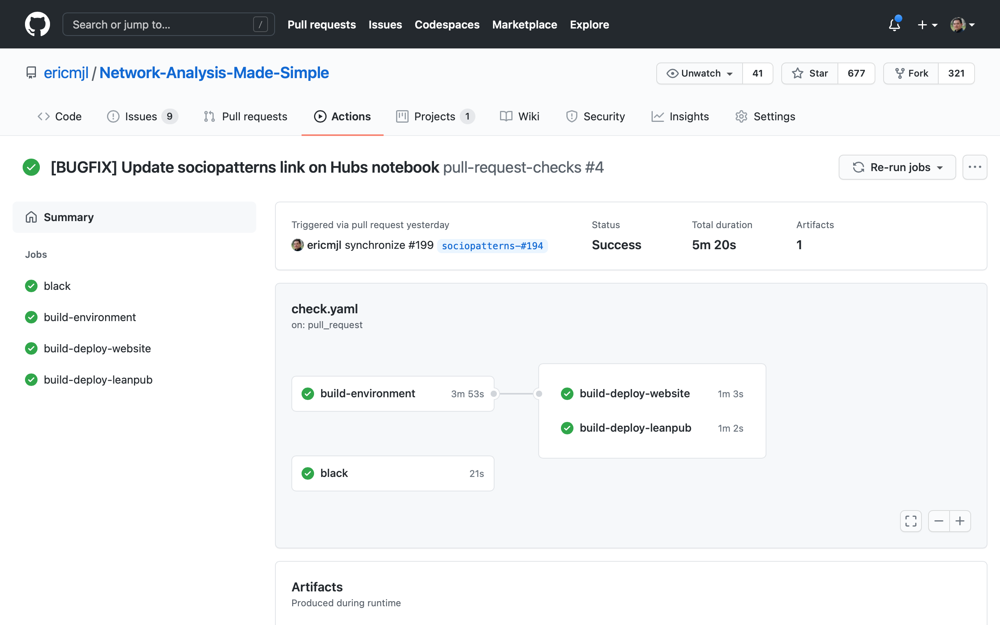

written by Eric J. Ma on 2020-12-24 | tags: data science network analysis made simple tutorial continuous integration pipelines github actions
Today, I began the long-awaited migration of my CI pipelines off from Travis CI and on to GitHub Actions. I started with my Network Analysis Made Simple tutorial repository as my test-bed, for the following reasons:
In this blog post, I'm going to document what I did and why, as well as lessons learned from migrating a CI pipeline off one provider onto another.
The biggest architectural change I did here was to split up my build pipelines into logical "jobs". I defined three logical stages:
Building the environment takes approximately 3-6 minutes (depending on the performance of the machine that runs the install steps).
Building the website requires executing all of the notebooks from top to bottom.
In authoring the notebooks,
I try my best to ensure that they can be executed without errors
in under 15 seconds,
though 1 minute is the upper-bound acceptable.
MkDocs is the site building engine,
while mknotebooks gives me the ability to execute the notebooks as part of the build.
(A little interjection here:
I also put in a PR to mknotebooks to enable insertion of a Binder link at the top of a notebook,
so that readers can directly open a Binder session with the notebook!)
The site that gets built is then force-pushed into the gh-pages branch of the repository.
In total, this step takes about 5-7 minutes.
Building the LeanPub book also requires executing all of the notebooks programmatically.
I take advantage of the MkDocs configuration file to order the content.
I used a Jupyter notebook to prototype the script that builds the content,
though I also subsequently went lazy
and decided to just execute the notebook
from top-to-bottom directly in a programmatic fashion too.
(I am not sure when I'll come to regret this move,
but hey, at least there's in-line documentation (Markdown cells)
that explains what I'm trying to accomplish.)
The manuscript that is built gets force-pushed to the leanpub branch of the repository,
and I do a curl call to the LeanPub API to trigger a new build of the book.
In total, this step takes about 5-7 minutes as well.
Building the website and LeanPub book can run in parallel as soon as the environment is built. Hence, I took advantage of this fact on GitHub Actions, which:
I could write the pipeline such that it would build the environment once, package it up as an artifact, and re-use the environment in both of the downstream steps, thus allowing me to parallelize the two steps.
The logical steps involved in both of the pipelines are identical except for the deployment because in the case of Network Analysis Made Simple, "testing" equals to "ensuring the notebooks execute from top to bottom". (Effectively, I have no unit tests on the tutorial repo, just integration tests.) As such, I took this opportunity to engineer the pipelines to be modular and work on both systems.
To start, I made the build steps into individual bash scripts
that are stored in the scripts/ci/ directory.
The scripts stored here are, in order of operation:
build_environment.sh: used to build the conda environment for the tutorial,
and package it up using conda-pack.build_leanpub.sh: used to build the source files that power the LeanPub book.build_website.sh: used to build the files that are hosted on GitHub Pages.In terms of workflow, the order of operations is:
build_environment.sh
-> build_leanpub.sh
-> build_website.sh
In GitHub Actions,
I structured the pipelines as different "jobs".
Because user @s-weigand has a
setup-conda@v1 action available,
I can skip over the install_anaconda.sh step,
and leverage what he has instead.
After building the environment with build_environment.sh,
which includes a conda-pack step to build a tarball with the environment packaged up,
I used the actions/upload-artifact@v2 action
to take the built tarball and upload it as an artifact of the build.
This allowed me to share the built environment
between the job that builds the environment
and the jobs that builds+deploys the website and book.
The two deployment steps were quite similar,
with the only difference being the build script that is called.
Otherwise, before the build script,
I would use the actions/download-artifact@v2 action
to download the built artifact from the previous job,
and execute their respectively configured
peaceiris/actions-gh-pages@v3 actions
to deploy the websites.
On the LeanPub push, I would also execute a curl command to a web API (available only to Pro users,
which I gladly paid for) to trigger the publishing of a new version.
Finally, I wanted to make sure that my code adhered to black code standards.
As such, I made an extra job that runs independently,
in which I install a lightweight Python environment
which I use to run code checks against the codebase.
One advantage I see in having parallel jobs run is that I can more quickly identify when an issue crops up. Because the LeanPub publishing step does not logically depend on the GitHub pages publishing step, I can avoid the scenario where the GitHub pages step has to finish first before I can see a bug that happens in the LeanPub step. Additionally, if my code is not up to snuff, I can quickly uncover that problem through the parallel code quality check.
Because conda activation can behave a bit non-uniformly, I had to resort to a little bash hack that allowed me to execute the environment activation uniformly. The specific line I used was:
source nams_env/bin/activate || conda activate nams || source activate nams
These are three ways to activate an environment.
The first activates a conda-packed environment; the second way is the modern way,
while the third way is the legacy way.
I layered them this order just in case one of them failed.
I also used artifact caching to speed up my build times. In particular, I did not want to wait for all the notebooks to be executed just to test-drive changes to the CI system unless those changes would directly have an effect on the outputs made. As such, I inserted a cache step in each of the jobs.
For building the environment,
if none of environment.yml and build_environment.sh changed,
then the CI system would use the cached version of the gzipped environment.
For building the website and book, if none of the notebooks, environment, or build scripts changed, then the CI system would skip building those artifacts. In doing so, I could cut out about 3-4 minutes of parallel build times if nothing that would affect the outputs were touched.
If you're interested in studying my pipelines, you can find them on the GitHub repository. In particular, you'll want to view:
The process of building CI pipelines is getting ever more familiar as I begin to learn some of the idioms here. For example, I used to assume a single build environment when using Travis CI, but in engineering the GitHub Actions pipeline, I realized we can build "artifacts" (like the packaged up conda environment) that get re-used later on. All it takes (oh yeah, "all it takes") is being absolutely sure about where which file is placed, and where your current working directory lives. From my experiences building CI pipelines, I think the hidden skill that nobody talks about that is absolutely needed when building CI pipelines is this: the ability to construct an accurate mental picture of the current state of the filesystem and runtime environment variables that are active and available. If you can do this, you can build CI pipelines and debug them faster than others can.
Which then brings me to speed. CI pipelines still take a long time to build! That is because each CI system, whether it is AppVeyor, Travis CI, Azure Pipelines or GitHub Actions, approaches the ergonomics of building a pipeline slightly differently. From the config file syntax to the idioms of how the filesystem/runtime environment is propagated to the next step, these are assumptions about the state of our environment that:
For those reasons, building pipelines still takes about a day or so of time investment, maybe less if you're seasoned and know the idioms well enough. Yes, at its core, pipeline building is really nothing more than shuffling files around and executing them, but knowing how they get shuffled around and why they may be present or not in the right directories will give you a leg up in debugging the pipeline. You might be able to get away with templates that you copy/pasta from project to project, but without a deeper understanding of the system you're working with, you'll find it difficult to get unstuck and debug anything that might crop up.
Firstly, I think GitHub Actions is really awesome because of its unlimited parallel builds for open source projects. With this, I can keep the continuous integration systems running on my OSS projects in a time-effective (and definitely cost-effective) fashion.
Secondly, I found the documentation for GitHub Actions to be very user-friendly. There is something about the way the docs are written that makes them easy to follow. My hunch here is that the examples that are shown on the docs are "minimally complex", or "minimally non-trivial", which is the right balance between being easy to follow, having enough material to transfer to another non-trivial workflow, but not being over-engineered or overwhelming that it becomes hard to follow. (The latter description reminds me a lot about Azure Pipeline's documentation...)
Finally, nothing really beats the graph view! Take a look at it below.

It's gorgeous and helps me visually see the status of the pipeline.
In summary, I think GitHub Actions has a great set of ergonomic and economic value propositions. I'm more than happy to pay a cup of coffee a month as a Pro-tier supporter because I think GitHub is doing the right things in providing unlimited parallel builds for OSS projects. If you haven't tried it out, I'd definitely encourage you to do so!